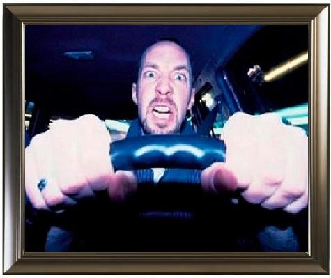

Как я провел лето!
- Мое лето прошло довольно скучно. Все лето я был занят самыми разными вещами и у меня,
практически, не было времени на отдых.

- Первый месяц своего лета я работал в колледже. Так прошла моя производственная практика.
Я помогал заместителю директора по учебной части.

- Потом, после трудового дня практики, а затем, и после практики, я занимался в автошколе.
Я проходил практические занятия с инструктором на автомобиле.

- Происходило много интересного, и именно тогда я понял, что в Москве очень много дураков.
И они имеют свои автомобили. :)

- Когда мои практические занятия в автошколе закончились, мне пришлось уехать на дачу.
На ней я провел долгие две недели августа. Это были тяжелые недели.
Во время них приходилось много копать и работать по участку.

- В последние 2 недели мне удалось хотя бы немного отдохнуть.

- Я по гулял со своими друзьями, отдохнул, по катался на велосипеде и затем,
кончились эти теплые летние дни, и пришла пора идти в колледж.